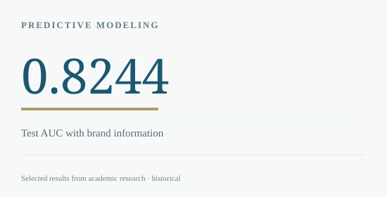

← BACK TO RESEARCH LIBRARY
Quantitative Analytics / 2025
Brand Effects in U.S. Automotive Sales
A compact empirical test of the predictive value of an intangible asset: brand.
USC · ECON 570Group research
THE RESEARCH QUESTION
Does manufacturer identity contain useful information about vehicle sales after controlling for price and specifications?
Studied vehicle sales across 157 models with LASSO feature selection, OLS and machine-learning classifiers; compared technical-only and brand-aware prediction.

METHODOLOGY
How the analysis was conducted
Cleaned missing product-attribute data, performed 10-fold LASSO selection, modeled brand dummies using OLS and compared multinomial logistic regression with random forest for sales tiers. Evaluated brand-aware vs. technical-only features.
KEY FINDINGS
What the evidence suggests
- The reported brand-aware High vs. Non-High test AUC was 0.8244, versus 0.798 for the technical-only model.
- The selected logistic regression reported 64.27% mean five-fold cross-validation accuracy.
- Holdout three-class accuracy remained 53.33%, pointing to limited generalization and separation of mid-tier models.
SCOPE & LIMITATIONS
Only 157 observations; categorical brand effects may be unstable. The source paper has inconsistent technical-only cross-validation accuracy figures, so they are not reproduced as a headline claim.
SOURCE
Based on “How Is the Brand Effect of Vehicles on Sales in America” (ECON 570, Group 7). Full academic paper available below. Third-party licensed datasets and employer materials are not redistributed.